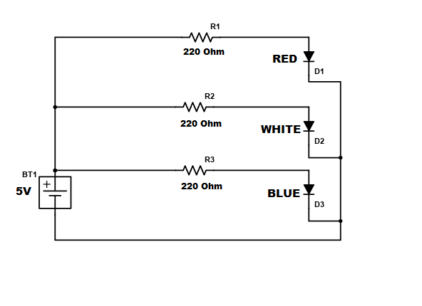
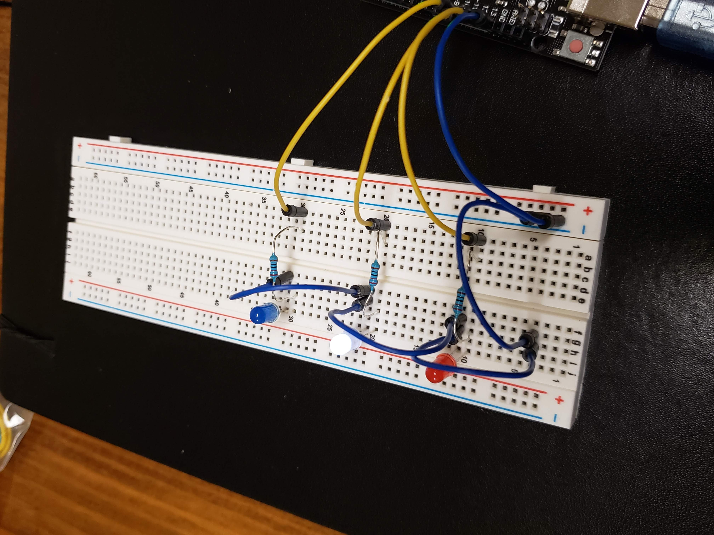

Assignment 1

This is the schematic for my circuit. I choose 220 Ohm resistors because the lowest voltage drop LED used was RED, requiring a 173 Ohm resistor, so I played it safe and used 220 Ohm resistors for every LED.

This is my circuit, each LED is connected to its own pin in the UNO board. This allows for direct input to each LED from Arduino the application.
// setting the starting pin number to begin the loop, it will be changed
int pinNum = 13;
// the setup function runs once when you press reset or power the board
void setup() {
// initialize the variable pinNum as an output.
pinMode(pinNum, OUTPUT);
}
// the loop function runs over and over again forever
void loop() {
// checking is pinNum is less than 11 because there are no connections past that pin
if(pinNum < 11){
// change pinNum to 13
pinNum = 13;
}
// writing to board to turn on and off the pinNum LED with a half second delay
digitalWrite(pinNum, HIGH);
delay(500);
digitalWrite(pinNum,LOW);
delay(500);
// setting pinNum to the next pin
pinNum = pinNum - 1;
}
Above is the code I used in Arduino. I used a loop to cycle through the three pins I was using to communicate with each LED.

Here is the GIF of my circuit running, it flashes in the order of red, white, and then blue.